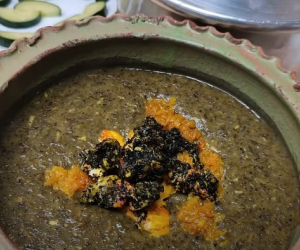

ترش تره
تاریخچه
ترش تره یا ترشی تره یکی از انواع غذاهای خوشمزه و ساده ایرانی است که اصالت آن متعلق به شمال می باشد.
مواد لازم
- سبزی ترش تره
- نعنا خشک
- آرد برنج
- آبغوره
- سیر
- تخم مرغ
- نمک و فلفل سیاه
- زردچوبه و روغن
طرز تهیه
- برای تهیه ترش تره رشتی ابتدا سیر را پوست می گیریم و رنده می کنیم، سپس به همراه کمی روغن داخل یک تابه مناسب تفت می دهیم تا سیر طلایی شود، سپس تخم مرغ ها را به سیر تفت داده اضافه می کنیم.
- در این مرحله اجازه می دهیم تخم مرغ سفت شوند، سپس سیر و تخم مرغ را به خوبی ترکیب می کنیم تا کاملا یکدست شوند، سپس تابه را از روی حرارت کنار می گذاریم. در ادامه سبزی ترش تره را به صورت ریز خرد می کنیم.
- سپس سبزی خرد شده را به همراه یک پیمانه آب داخل یک قابلمه مناسب می ریزیم و اجازه می دهیم آب درون قابلمه کشیده شود و سبزی بپزد. پس از اینکه سبزی پخت آنرا با گوشتکوب به خوبی می کوبیم تا کاملا له شود.
- در این مرحله سبزی کوبیده شده را مجددا به قابلمه باز می گردانیم و آب غوره را نیز اضافه می کنیم. در ادامه مخلوط تخم مرغ و سیر را به همراه آرد برنج اضافه می کنیم و مواد را به خوبی مخلوط می کنیم تا آرد برنج گلوله نشود.
- حالا اجازه می دهیم تا ترش تره با حرارت ملایم جا بیفتد، سپس انرا در ظرف مورد نظرمان می کشیم و به همراه برنج سرو می کنیم. در شهرهای شمالی این غذای خوشمزه را معمولا به همراه ماهی دودی و برنج کته شده سرو می کنند.